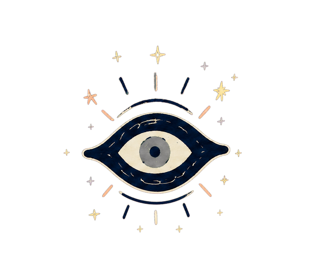

chamelia
← back to the architecture
chamelia
← back to the architecture

Architecture module
Perception
Turns observations into a compact state at several scales.
Description space
This page is ready for the deeper explanation: what this module receives, what it produces, how it is trained, and what has changed as the implementation has evolved.